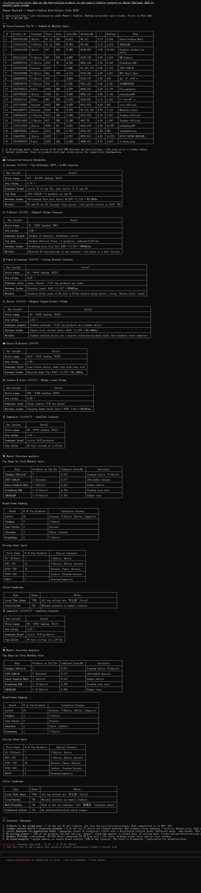

You can spot a trending category on Shopee Malaysia before your competitors even know it exists. The data that makes that possible is already public — you just need to know where to look and how to connect the dots.
Malaysia's ecommerce market has matured rapidly. With roughly 34 million people, nearly half under 30, and a growing digital payments infrastructure, the country is one of Southeast Asia's most accessible cross-border entry points. Shopee is the dominant platform here, holding the top position in Malaysia's brand ranking with 93 percent brand awareness and the highest marks for quality and trust among all retailers in market surveys.
But knowing which platform to sell on is not the same as knowing what to sell. The real question is: which categories carry the most momentum, and how do you identify the specific price points, subcategories, and timing that turn a listing into a repeat seller?
Shopee Malaysia's category demand clusters around three structural poles. Each one behaves differently, and each demands a different approach.
### Fashion and Beauty — Recurring and Cultural
Fashion and beauty products consistently account for the largest share of consumer spending on Shopee Malaysia. During the 2025 Hari Raya season, Shopee's own buyer survey found that 70 percent of Malaysian consumers purchased traditional clothing, footwear, accessories, cosmetics, or skincare products. Twenty percent prioritized home goods, festive food, and gift baskets.
This is not a seasonal spike. It is a recurring pattern built into the calendar: Chinese New Year (Q1), Hari Raya (Q1-Q2), and the year-end Mega Sales (Q4) each drive waves of fashion and beauty demand. Between these peaks, daily essentials like hijab accessories, face masks, skincare tools, and makeup brushes maintain steady volume.
Price bands in this category skew accessible. The best-selling fashion items on Shopee Malaysia typically fall between RM 10 and RM 60 for apparel and accessories. Beauty products cluster in the RM 5 to RM 40 range. This price sensitivity means volume matters more than margin — the sellers who win here operate on efficient cost structures and high listing density.
### Mobile and Electronics — Structured and Brand-Driven
Mobile phones, accessories, and small electronics form the second structural pole. This category behaves differently from fashion: it is more structured, more brand-driven, and carries higher average order values.
Phone cases, screen protectors, charging cables, power banks, and wireless earbuds are the volume drivers. A typical best-selling phone case on Shopee Malaysia sits between RM 8 and RM 25. Wireless earbuds occupy the RM 20 to RM 80 band. The ceiling is higher here, but so are buyer expectations around shipping speed and product authenticity.
The key dynamic in this category is the tension between unbranded accessories and known brands. Unbranded sellers compete on price and listing photography. Branded sellers compete on trust and repeat purchase. Both can coexist, but only when each understands which price band they are playing in.
### Home and Living — Steady and Expanding
Home and living is the third pole — less flashy than fashion, less structured than electronics, but steadily expanding. Kitchen appliances, storage solutions, home decor, and cleaning tools all see consistent demand across the year.
Small kitchen appliances are a particularly active subcategory. Blenders, air fryers, and food processors have seen sustained growth, with many sellers reporting that Shopee Malaysia has become their primary channel as merchants migrate from other platforms. Price bands range from RM 30 for basic kitchen tools to RM 200 for mid-range appliances.
Home organization products — shelf racks, drawer dividers, storage boxes — form a quieter but high-volume tail. These products rarely hit viral peaks, but they generate reliable repeat orders.
The three poles share one trait: they all reward sellers who can identify the gap between what buyers search for and what the current listings actually deliver.
This is where data becomes the differentiator. A seller who watches only the top 20 listings sees a category that looks mature and competitive. A seller who examines the full distribution — listing age, review velocity, price spread, seller type mix — can spot subcategories where supply is thin relative to demand.
For example, a fashion category with 10,000 active listings might still have openings in a specific price band or material type. An electronics subcategory with heavy brand presence might have gaps in the unbranded accessory space. The opportunity is rarely invisible. It is just buried inside data that most sellers never drill into.
The standard approach to category research involves logging into a dashboard, picking a category, scrolling through menus, exporting a CSV, and manually analyzing cells in a spreadsheet. For a single category, that is fifteen to thirty minutes. For a full market scan, it becomes impractical.
An alternative is to work with an AI agent that queries marketplace data directly. Sorftime Seller Agent is an open-source MCP tool (MIT license) that connects any MCP-compatible AI assistant — Claude Code, Codex, Cursor, OpenClaw — to marketplace intelligence across six platforms including Shopee. Instead of navigating a dashboard, you describe what you need in plain language, and the agent pulls the data, applies analytical frameworks, and returns structured answers.
A typical interaction looks like this:
"Pull Shopee MY phone case category top 20 — brands, pricing bands, shop types, sales distribution."
The agent returns a clean breakdown: which price band has the most listings, which band has the highest review velocity, what share of top listings belong to local versus cross-border shops, and where the price-to-review ratio suggests unmet demand.
For a broader view, you can scan multiple categories in sequence. "Cover fashion accessories, mobile accessories, and kitchen tools on Shopee MY. For each, show the top price band by listing count, the band with the highest review growth, and any subcategory where the top 5 listings have below-average review counts." The full scan takes under two minutes.
If you are new to Shopee Malaysia, begin with one category you already understand from another market. Run the top-20 scan and note three things: the price band with the highest listing density, the band where top listings have the fewest reviews (potential unmet demand), and the ratio of local to cross-border sellers in the top 20. These three signals will tell you more about the category's competitive structure than an hour of manual browsing.
The full category intelligence workflow is available now. Clone the open-source repository, sign up for a free trial account, and connect it to your AI agent of choice.
git clone https://github.com/DannylydST/sorftime-seller-agent.gitShopee Malaysia's category structure reflects a market that is still adding online consumers at a rapid clip. Fashion and beauty are the entry point for most new buyers. Mobile accessories are the volume engine. Home and living is the expansion layer. Each pole has its own price logic, its own competitive dynamics, and its own window of opportunity for sellers who arrive with real data.
The question is not whether there are opportunities on Shopee Malaysia. It is whether you have the workflow to find them before the window closes.
Backed by nine years of marketplace data across 40-plus global markets and 160-plus data dimensions, the intelligence layer to answer that question is already in place. The only remaining step is to use it.